Intro.
The best way to describe Vim is that it's a text editor you write with. But instead of leaving it at that, there's all these secret commands that you can type that make it do so much more. You can get help, learn from a built in tutorial, or remove and edit whole paragraphs with a simple keystroke or two.
In this e-book, you'll learn some basic commands that you can use everyday and how to start using the command line / terminal without having a heart attack while on your Mac. It's not dark magic, it's not something that only programmers and people with P.H.D's can learn. It's simple and once you get the hang of it I promise you won't be disappointed. You might even get addicted and become a programmer or writer that works solely with Vim. You never know. ...
- $ /Users/md/Downloads/MacVim-snapshopt-70/mvim ; exit;
I'm going to assume you know how to download a piece of software and install it on your computer. So, head over to Vim's site at __________ and download MacVim. Locate the file, it should say something like this "MacVim-snapshot-70" in a zip file. Unzip it and double click to look inside. You should see three files: MacVim, mvim, and a README.txt.
Double clicking MacVim opens it outside of the terminal. You can use it this way, but it's ugly and doesn't leave that much room for customizing and if you are on a Mac, color is probably important to you. So, we are going to click mvim. This will initialize the installation process in the terminal that will resemble the image below.
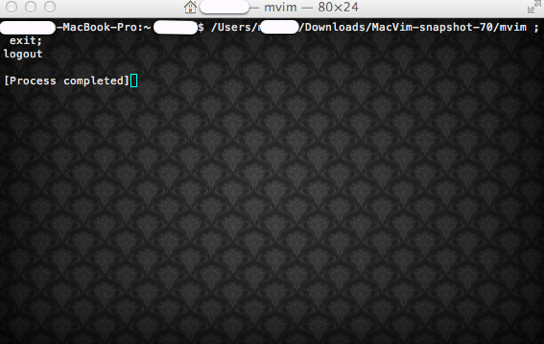
* Everywhere there is a white line is just a security measure I added to the image. So don't get freaked that yours doesn't have those funny lines. It just represents your user's name and the name of the computer you are operating on.
Now what? Now you learn your Terminal. Then we'll get on to vim. Exit out of the terminal by click the red x. Then open a new window by going up to where it says terminal and clicking shell > new window. After your new window is open, we are going to play around with some random commands to help you learn more. But first, some fun ones.
$ calcal - If you type this and hit enter (cal > enter) you will see the current month in a mini calendar form. You can also type in a year after cal to see any year's entire calendar.
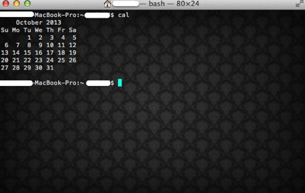 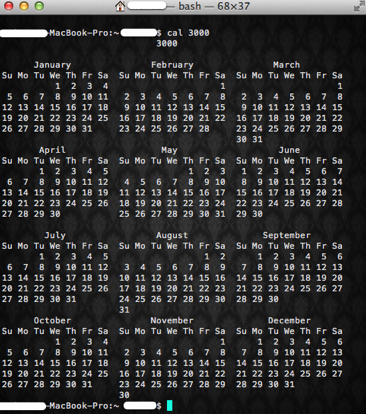 * Hmm... It seems in the year 3000 my birthday is on a Monday. Very interesting. ... What else can we do? How about one of those weird words made out of hashes? That's accomplished with banner.
$ banner 'word'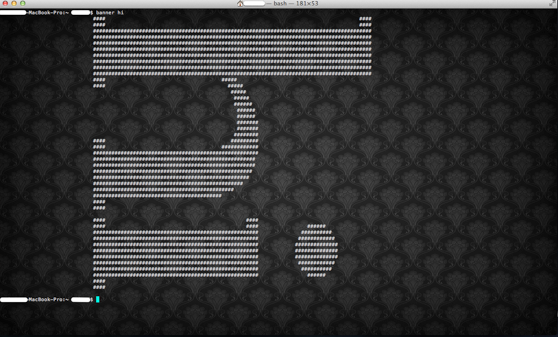 Something you'll use everyday is cd. This allows you to switch to a folder on your computer and work inside of it instead of double clicking. Think of it as teleporting instead of walking, you get to skip some of the steps and you don't have to listen to your noisy neighbors on the way.
In order to keep your Vim files organized, you are going to be using this and a few other commands a lot. So remember it! One of the most useful ways of using this is to point it to your user file and then to a file within it. For me, it looks a little like this.
$ cd /Users/ 'user name' / 'home folder' / 'file folder'
Example:
$ cd /Users/md/md.github.com/*This point me to my github website folder stored on my computer. After that, I can use some other commands to edit the files within that folder.
So, your next task is to cd into your user / home file and make sure you take a note on how to do it so you don't forget in the future. Here's how it should look.
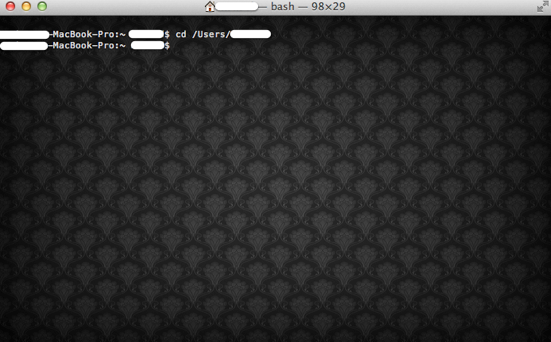 If you don't know what your username / home file is named (This happens sometimes when someone else sets up your computer or you are under someone else's settings) just look at the word in between these symbols (~, $ ) and type that after /Users/. Another simple way to check this is by opening finder and looking at the icon of the house, whatever name is there is what you need to know.
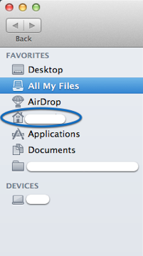 Now we need to create a folder to hold your files you write from Vim. We can do that with the mkdir command.
For this example, we’ll just create a folder named: “Etsy Blog Posts”. Later we’ll add files to it and write them in the Terminal with Vim.
$ cd /Users/md/$ mkdir EtsyBlogPostsIf there are spaces between the words it will only create a file with the first word as it's title. So don't use any spaces when creating the file.

When this is finished. You should be able to travel to your home folder and see the file shown on the right.
Before we populate our new folder with stuff from VIM. I want to show you one last Terminal hack. We are going to customize the terminal. Right now if you are on a Mac it's probably white and completely boring. But did you know you can change the background and colors?
Under Terminal go to preferences and add a new theme by clicking the + button.
Terminal > Preferences > + 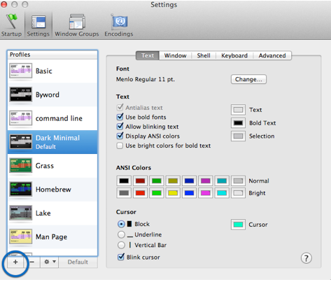 You should see a small pink and white box show up in the left panel for you to rename.
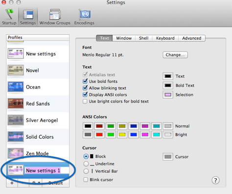 Name it to whatever you wish and adjust the settings to your preference. You can choose which style and color of cursor you want here as well as what font etc. When finished adjusting those settings, you can click the window button to change the background as well as other settings.
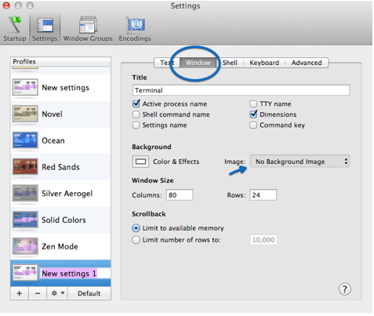 Once you find an image on your computer that you want to be your background the last thing to do is to set you new settings to default. Click on your newly created settings icon on the left and then select default. Once you exit out your Terminal and reopen it the settings should be reset.
On to Vim!
Vim
When I first started using Vim I searched G**gle for various tutorials and attempted to use them. I used such tutorials as, "A Vim Primer" and "Learn Vim Progressively". The first few paragraphs were simple enough, but after that I felt like I was trying to read archaic latin. It was grueling and I slogged along hoping that somewhere there was something that would teach me how to use Vim that was easy, or at least easier than archaic Latin. Turns out if you downloaded Vim, you already have it. Inside every software file is a magical prize and that's VimTutor.
VimTutor is a tutorial accessible from your Terminal where you can learn step by step basics up to some really nice tricks to save time and your sanity. So, before we even make a file. Here's how to access VimTutor.
$ vimtutor -g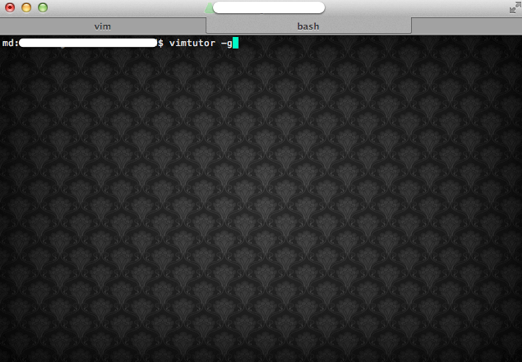 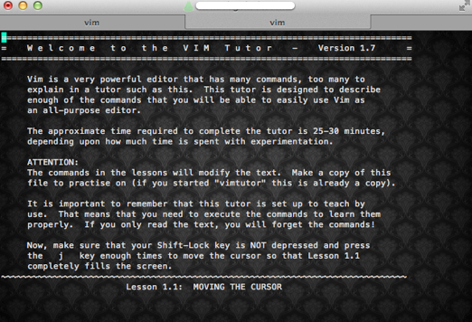 Now that you know how to access VimTutor you can go there answer any questions you may have in the future about Vim. I suggest working through each of the tutorials taking notes in an instance of Vim or another text editor. Then practicing 3-5 (commands) a day for a few days time each. After a few weeks you should be at the intermediate level of Vim and be able to do anything you want without wonder what each button does.
Open Vim
To create a new file in Vim and place it in your EtsyBlogPosts folder, simply cd to your folder, start vim, and then tell it what you want the file to be named.
$ cd /Users/'home folder'/EtsyBlogPosts$ vim helloworld.txt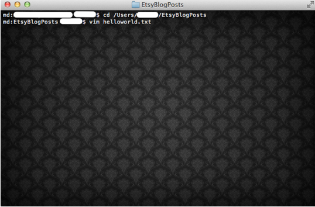 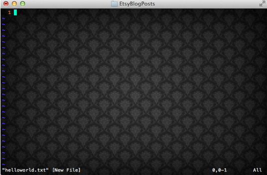 You should see that when Vim opens, it doesn't look much different than your normal Terminal. That's fine. All that you should see is in the left hand bottom corner is the name of the file you just created.
You'll also notice that you cannot type into the text editor. That's because Vim has something called modes. In it's normal mode you can use commands to manipulate your document, save, delete, and use macros (text replacement etc.). In order to actually type into Vim you have to first touch the i key. This tells vim that you want to edit the document.
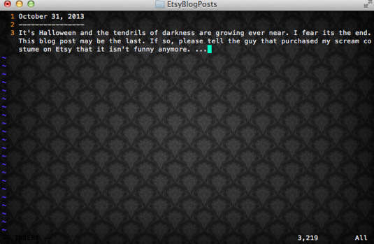 At this point, you'll want to save that text document to your folder for later posting. Click the esc button, wto save and q to quit or exit Vim.
esc > :wq Alright, head over to your home folder in finder. Double click the EtsyBlogPosts folder and see if your helloworld.txt file is in there. If so, good job! We're moving on now. ...
Next thing you'llwant to know is you can navigate between your paragraphs using several functions. In normal mode you can use hjkl for arrows to move through the document or you can use the actual arrow keys on your keyboard. In addition to this there is a host of basic commands in normal mode that can help you work magic. I suggest you work with the ones below until you feel that you are comfortable with them and have them pretty much memorized.
Basic Commands
●